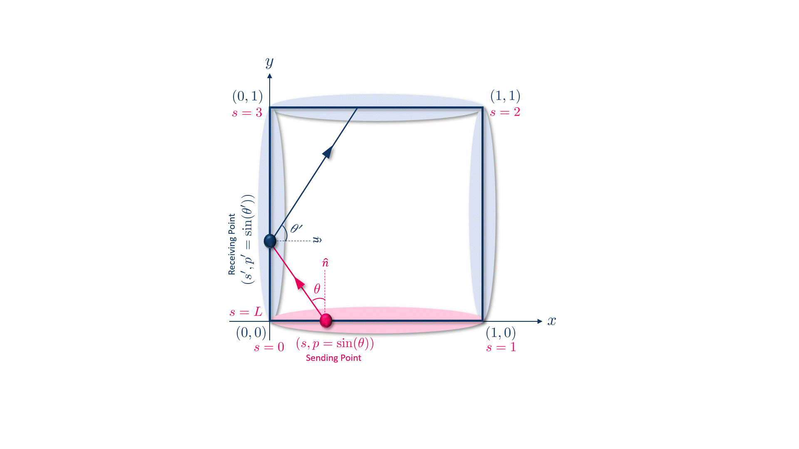

Research Interests
My research spans multiple interdisciplinary fields, with a core focus on integrating scientific computing, image processing, dimensionality reduction, and machine learning to enable data-driven discovery and control of complex dynamical systems.
In fluid dynamics, my work includes classifying dried blood droplets using an optimised supervised learning approach. Other areas of application involve modelling the stochastic propagation of phase-space densities, renewable energy systems, and smart textiles.
I have also supervised a wide range of research projects across various departments, including Physics, Mathematics, and Mechanical Engineering, all aimed at extracting meaningful insights from scientific and engineering systems using data-driven techniques.
My key research interests include:
- Numerical Analysis and Scientific Computation
- Mathematical Methods and Modelling
- Dimensionality and Model Reduction
- Machine Learning for Prediction and Optimisation
- Image Processing and Analysis
Current Research

Accurate prediction of high-frequency noise and vibration in complex built-up structures remains a key challenge. Such phenomena are governed by highly oscillatory equations, for which standard numerical methods become prohibitively expensive at high frequencies. Energy-based approaches, including Statistical Energy Analysis and ray tracing, offer computationally viable alternatives in certain circumstances.
Dynamical Energy Analysis (DEA) bridges the gap between these methods by describing the evolution of ray densities in phase-space via a transfer operator. As such, DEA provides a ray-based approach that is not limited by reflection order. This work presents a data-driven implementation of DEA using Extended Dynamic Mode Decomposition (EDMD).
Phase-space data are partitioned into locally smooth clusters, within which the transfer operator is efficiently approximated. Improved accuracy is achieved by employing Legendre polynomial approximations within these data clusters and/or through an additional subdivision of the phase-space along the directional axis.
This yields a versatile and accurate DEA framework that is made computationally tractable through the data-driven construction of the transfer operator.
PhD Supervision
I am available for PhD supervision in the research areas mentioned above. Please send me an email outlining your research proposal and I would be happy to discuss.
If you are self-funded, please fill in the form here: Self-Funded: Mechanical Engineering MPhil/PhD.
Otherwise, UCL provides several PhD studentship schemes that might be helpful for you:
China Scholarship Council-UCL Joint Research Scholarship
Funding offered by UCL and the China Scholarships Council (CSC). The CSC provides economy air travel to and from the UK, visa application fees, and an annual living allowance (currently set at a rate of £1,350 per month). UCL will provide full tuition fees for the standard duration of a full-time MPhil/PhD programme, normally 3 years subject to sufficient academic progress. Where students are undertaking an integrated doctoral programme with a standard research length of four years, the UCL fee award will be extended to the 4th year of research.
UCL EPSRC Landscape Awards (UELA)
EPSRC-funded studentships which provide full funding for a PhD student for four years, covering tuition fees, a stipend at the UKRI minimum rate plus an enhancement of £1.5k per annum, and a Research Training Support Grant of either £5k, £6k or £8k depending on the needs of the project.
Research Excellence Scholarship (UCL-RES)
Full tuition fees for Home or Overseas students; maintenance stipend for the standard length of the research portion of the programme of study, or remainder thereof; and research costs.
UCL Research Opportunity Scholarship (UCL-ROS)
Tuition fees equivalent to the standard postgraduate UK/Home rate plus a maintenance stipend during the research portion of the programme which increases each year with inflation. For the 2025/26 academic year, the stipend rate is £22,780 for full-time study. For the 2026/27 academic year, the stipend rate is to be confirmed. The scholarship includes additional research costs of up to £1,200 per year for the stated duration of the research portion plus a single allowance of £1,000 towards conference costs over the duration of the programme.